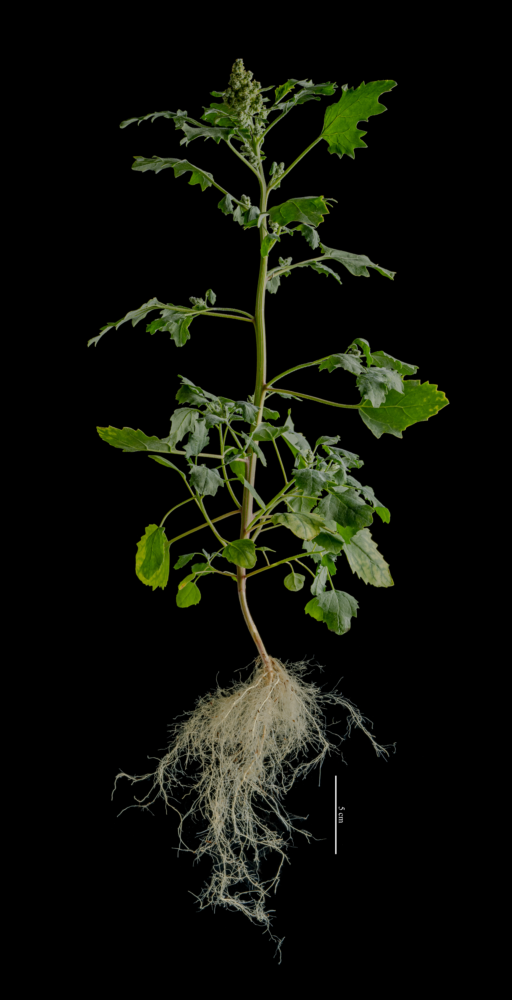
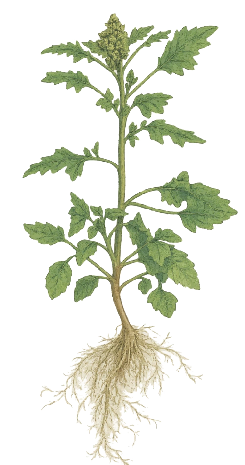

Omics coverage
Gene records by evidence layer
Chenopodium quinoa · Cq_V4 reference
Quinoa Life-cycle Omics Atlas
Tissue-resolved transcript and protein abundance across 28 quinoa tissues spanning six developmental stages. Search and analysis are available without registration.
Examples: Cqu1AG202550, AT2G44710, RNA-binding protein

Species
Chenopodium quinoa Willd.
Transcriptome and proteome atlas
Life-cycle navigation
Explore the quinoa life cycle
Twenty-eight tissues with matched transcriptome and proteome layers, organized by developmental context and organ system.

Resource portals
Browse the atlas
Atlas
Life-cycle Atlas
Matched RNA and protein profiles across 28 tissues.
Genes
Gene Search
Identifiers, homologs, annotation and abundance profiles.
Tissues
Tissue Browser
Detected features, abundant genes and RNA-protein concordance.
Protein programs
Tissue-specific Proteins
Marker proteins, enhanced classes and enriched GO terms.
Comparative omics
Cross-species Conservation
Orthogroup conservation and tissue-pattern clusters.
Subgenomes
A/B Subgenome Bias
RNA- and protein-level homoeolog abundance across tissues.
Protein associations
CF-MS Associations
Elution profiles, association communities and A/B replaceability.
Utilities
Tools
Expression heatmap, GO enrichment, sequence retrieval and BLAST.
Database contents
Data overview
Tissue coverage
Samples by biological context
Current release
Release candidate 1.0 · Cq_V4
Dataset scope and evidence
Featured resources
Biological resource collections
Compact entry points to the biological resources represented in the atlas.
Tissue programsTissue-specific protein programs
Specialized protein abundance programs distinguish reproductive, seed, root and EBC tissues.
Open resource → Cross-speciesConserved and shifted orthogroupsProtein conservation and lineage-dependent tissue-pattern clusters.
Open resource → Subgenome regulationProtein-level A/B divergenceHomoeolog abundance bias across matched tissues and omics layers.
Explore resource → CF-MS associationsProtein association and homoeolog replaceabilityElution profiles, association communities and A/B homoeolog replacement patterns.
Open resource →Quick starts
Example queries
Life-cycle atlas
Gene annotation and tissue profiles
Homology-based annotation and matched transcript/protein abundance profiles across all 28 tissues.
Gene search
Browse gene records
Filter records by omics coverage, peak-expression tissue or derived statistic.
Tissue browser
Explore individual tissues
Browse RNA- and protein-detected genes, tissue-level concordance and highly abundant features. RNA requires TPM > 1 in at least two replicates; protein requires positive abundance in at least one replicate.
Tissue proteomics resource
Tissue-specific protein programs
Explore marker proteins, matched transcript support, tissue-enhanced protein classes and enriched GO functions across 28 quinoa tissues.
Gene-level resource · 28 tissuesMarker proteins
Tissue-enriched marker proteins with transcript evidence
RNA support summary
Enhanced proteins
Tissue-enhanced protein classes and enriched GO functions
Enhanced GO network
GO function nodes linked by shared enriched genes
↬
Comparative omics resource
Cross-species conservation explorer
Explore orthogroup-level protein conservation across quinoa, Arabidopsis and rice, with matched RNA-protein coupling across eight comparable life-cycle tissues.
Orthogroup resource · 8 matched tissuesConservation landscape
Orthogroups by mean pairwise conservation and lineage variance.
Gene sets and export
Browse filtered orthogroups and download gene lists for downstream analysis.
Subgenome resource
A/B subgenome explorer
Explore tissue-resolved RNA and absolute protein abundance across matched quinoa A- and B-subgenome homoeologs.
Data definitions
Matched output
Global A/B abundance balance
Cross-layer regulation
RNA → protein behavior
Tissue direction
RNA and protein quadrant landscape
Each card reports the tissue in which the corresponding directional combination is the density mode.
28-tissue navigator
Shoot tip (ST)
Pair-level RNA–protein bias landscape
Filtered homoeologs
Homoeolog pair records
Functional associations
Broad-pattern GO enrichment
Protein association resource
CF-MS protein association explorer
Search quinoa co-fractionation profiles, precision-filtered protein associations, graph-derived communities and A/B homoeolog replaceability.
Data definitions
Fraction-level evidence
Global CF-MS landscape
Mean normalized signal and the number of proteins detected across the 59 IEX fractions.
Network composition
A/B association context
Precision-filtered associations partitioned into within- and cross-subgenome evidence.
Callable quartets
Association replaceability
Counts refer to homoeolog families, not individual network edges.
Resource guide
Move from landscape to records
Profile matrix
Protein elution heatmap
Up to 60 filtered proteins, normalized independently to preserve profile shape.
Callable profiles
Protein records
Interactive evidence graph
Protein association neighborhood
Search opens a protein-centred neighborhood; the default view shows high-degree proteins.
Filtered edge set
Association records
Graph-derived modules
Association communities
Communities summarize densely connected network neighborhoods and are not asserted as fully validated physical complexes.
Continuous profile behavior
A/B elution similarity
Callable association alternatives
Homoeolog quartet records
Tools
Query, enrich and compare gene sets
Lightweight tools for moving from gene IDs to sequences, tissue patterns and functional terms.
Batch lookup
Gene list summary
Expression heatmap
Gene set across 28 tissues
GO enrichment
Functional over-representation
Sequence fetch
Longest transcript/protein sequence
BLAST
Local sequence similarity search
Data access
Metadata downloads and record access
Direct downloads are limited to release metadata. Complete study datasets will be linked through verified repositories.
Access policy
Query first, repository managed
QLOA supports gene- and tissue-level exploration in the browser. Raw abundance matrices and complete derived tables are not distributed directly by the application.
Associated manuscript: in preparation; final citation and DOI not yet assigned
Reuse status: data and software licences have not yet been assigned
Lightweight lookup
Public record endpoints
These read-only endpoints support individual record lookup. Interactive-resource routes are implementation interfaces, not a bulk-download service.
/api/search?q=Cqu1AG202550 /api/genes/Cqu1AG202550 /api/tissues/OV
Automated bulk harvesting and high-volume endpoint enumeration are not supported.
Help
Resource information and support
Scope, interpretation, access, citation and support for using the atlas.
Evidence guide
QLOA distinguishes measured abundance, derived statistics and homology-based annotation. Predicted functions and network associations are evidence for exploration, not direct functional validation in quinoa.
Quick start
Explore the atlas
- Find a record. Search a Cq_V4 gene ID, Arabidopsis symbol or functional term in Gene Search.
- Inspect abundance. Open the gene report to compare transcript and protein profiles across 28 tissues.
- Place it in context. Use Data Resources for tissue-specific proteins, orthogroups, A/B homoeologs and CF-MS associations.
- Analyse a gene set. Use the Tools page for heatmaps, GO enrichment, sequence retrieval and BLAST.
Resource scope
Quinoa life-cycle atlas
- Species
- Chenopodium quinoa Willd.
- Genome assembly
- Cq_V4
- Data layers
- Transcriptome and proteome
- Coverage
- 28 tissues across 6 developmental stages
- Primary identifier
- Cq_V4 longest-isoform gene ID
- Release candidate
- 1.0 · 11 June 2026
Resource collections
What can be explored
QLOA connects gene reports and tissue profiles with tissue-specific protein programs, cross-species conservation, A/B homoeolog patterns and CF-MS protein associations.
Each collection is presented as a searchable or interactive resource rather than as a reproduction of a manuscript figure.
Open complete changelogInterpretation
Evidence types
Measured: transcript and protein abundance represented in the atlas. Derived: specificity, conservation, subgenome and network summaries calculated from study data.
Transferred annotation: descriptions inferred from homologous plant genes. Derived and transferred evidence should not be treated as direct functional validation in quinoa.
Data access
Public and repository-managed data
Direct downloads are limited to the tissue dictionary and assay sample metadata. Complete matrices, full derived tables and network edge lists are not distributed by the application.
Verified transcriptome, proteome and release-archive records will be linked here after repository publication.
Open metadata downloads Read access policyPublication and citation
Release status
- Publication state
- Pre-release metadata incomplete
- Manuscript
- In preparation; citation and DOI pending
- Transcriptome repository
- Verified accession pending
- Proteome repository
- Verified accession pending
- Data licence
- Not yet assigned
- Software licence
- Not yet assigned
A mass spectrometry-based atlas of the quinoa proteome reveals subgenome divergence at the protein level. Manuscript in preparation; do not cite it as a published article. For pre-release use, cite the atlas name, release 1.0, source repository and access date.
Repository records: transcriptome — no verified public accession; proteome — no verified public accession.
Data and software licences are not yet assigned. Public visibility or download availability must not be interpreted as permission for unrestricted reuse.
Access and support
Query service and contact
The atlas can be searched without an account. Gene lists and sequences submitted to the analysis tools are processed for the current request and are not written to the atlas database.
The standalone application does not retain submitted gene lists or sequences. Infrastructure-level logging and retention terms remain the responsibility of the production host and must be published before release.
Resource contact: Heng Huang, School of Life Sciences and Biotechnology, Shanghai Jiao Tong University · huangheng2000@sjtu.edu.cn
Source repositoryResponsible use
Privacy, limitations and accessibility
QLOA is a research resource. Database records, predicted functions and association evidence require independent validation and must not be used as the sole basis for clinical, food-safety or agronomic decisions.
The application stores one local browser preference and does not set analytics cookies. Submitted identifiers and sequences are processed for the current request; production infrastructure logging is governed separately by the host policy.
FAQ and support
Common questions
Which identifier should I use? Submit a Cq_V4 longest-isoform gene ID. Version suffixes such as .1 are normalized by sequence and batch tools.
Why can RNA and protein calls differ? Detection thresholds, missingness and measurement technologies differ between layers; absence from one layer is not evidence of biological absence.
Where are the complete datasets? Bulk study files will be linked through verified repositories after accession release.
How do I report a problem? Include the release, URL, gene or tissue identifier and steps needed to reproduce it in an email to the resource contact.